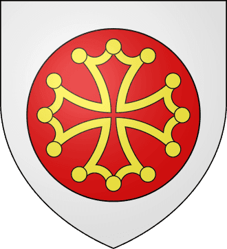
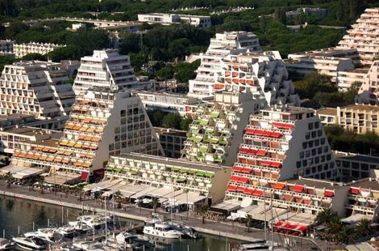
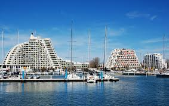

La Grande-Motte
Pyramides de
Méditerranée


⟹ Architecture · Port · Méditerranée ⟸

Avant la ville : dunes, marais et domaines agricoles. Jusqu’au milieu du XXe siècle, le territoire de l’actuelle La Grande-Motte appartient à Mauguio et se compose surtout de dunes, terres humides, vignobles et quelques domaines. Aucun centre urbain comparable à la station actuelle n’existe encore.
1963 : la Mission Racine. L’État lance une vaste opération d’aménagement touristique du littoral du Languedoc-Roussillon. L’objectif est de créer de nouvelles stations modernes capables d’attirer une clientèle française et européenne tout en maîtrisant l’urbanisation du littoral.
Jean Balladur, architecte d’une ville entière. L’architecte Jean Balladur reçoit la responsabilité de concevoir La Grande-Motte. Il imagine une ville complète, structurée par quartiers, espaces verts, circulations séparées et silhouettes architecturales inspirées à la fois des pyramides précolombiennes et des formes du paysage méditerranéen.

1966-1967 : les premiers grands chantiers. Le port, les réseaux, les premiers immeubles et équipements sortent de terre. Les pyramides deviennent rapidement la signature visuelle de la station.
Une architecture pensée avec le paysage. Balladur ne conçoit pas seulement des bâtiments : il organise perspectives, passerelles, patios, sculptures, places et végétation. Des milliers d’arbres sont plantés afin de transformer une station nouvelle en véritable ville-parc.
1974 : La Grande-Motte devient une commune. D’abord simple opération d’aménagement sur le territoire de Mauguio, La Grande-Motte devient une commune indépendante en 1974. Elle possède dès lors sa propre administration et poursuit son développement urbain.

Du tourisme saisonnier à la ville permanente. Au fil des décennies, la station se dote d’écoles, d’équipements sportifs et culturels, d’un golf, d’une thalassothérapie et d’un tissu commercial permanent. Elle n’est plus seulement une destination estivale mais une ville habitée toute l’année.
Patrimoine du XXe siècle. Longtemps discutée, l’architecture de La Grande-Motte est progressivement reconnue comme un ensemble patrimonial majeur. La ville obtient le label « Patrimoine du XXe siècle », devenu « Architecture contemporaine remarquable ».
Une expérience urbaine unique. La Grande-Motte reste l’un des exemples les plus aboutis en France d’une ville conçue presque entièrement par un architecte dans une vision globale associant urbanisme, art, paysage, végétation et loisirs.
La Grande-Motte : une identité façonnée par le littoral, les paysages de l’Hérault et l’histoire du Languedoc.
Repère synthétique — L'Âme des RégionsPour aller plus loin — sources et documentation :
• Ville de La Grande-Motte — histoire
• Office de tourisme de La Grande-Motte
• INSEE — La Grande-Motte
Jean Balladur (1924-2002) est la personnalité centrale de La Grande-Motte. Architecte et urbaniste, il a conçu l’essentiel du plan de la station, de nombreux immeubles, les grandes perspectives et une partie du mobilier urbain.
La Grande-Motte possède des traditions plus récentes que les villages anciens du littoral. Son identité collective s’est construite autour du nautisme, des grands rendez-vous estivaux, du vélo, du port et de la valorisation de son architecture.
Accès : La Grande-Motte se situe à l’est de Montpellier, aux portes de la Petite Camargue. Elle est reliée à Montpellier, Lunel, Carnon et Aigues-Mortes par la route et un important réseau cyclable.
Office de tourisme : Office de Tourisme, 55 rue du Port, 34280 La Grande-Motte.
Conseil de visite : pour bien comprendre la commune, alternez le cœur historique, les espaces naturels et le littoral ; ce sont ces trois dimensions qui expliquent son identité actuelle.